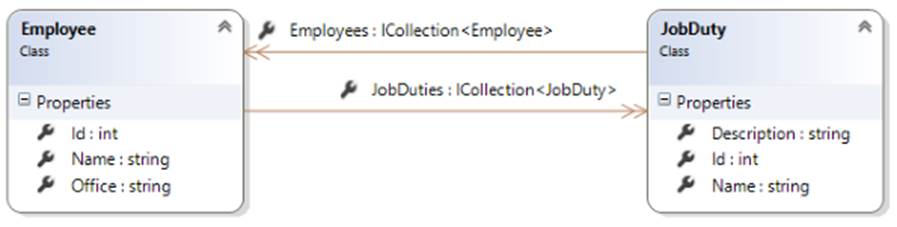

INT422 – Lecture 6
More work with associations, many-to-many, and self-referencing.
Test today
Test 5 is today, at the beginning of the timeslot, and will run approximately 18 minutes.
Textbook coverage
As previously announced, the textbook will have a supporting role as you learn new topics from these notes and your classroom sessions. Use the table-of-contents and the index to locate the topic, and then read about it there. A reminder: The textbook does not use view model classes in its discussions and code examples. We do.
Code examples
Associations – Many to many
Associations – Self-referencing
Theme for today
Last week, we learned to add objects that have an association with other objects. We focused on the one-to-many kind of association.
Today, we will look at two other common kinds of associations:
- Many to many
- Self-referencing (to-one, and to-many)
Remember that the key objective for this course is: Create interactive web apps, which have some complexity, and can scale. This week’s topics help us make progress.
Association – many-to-many
Surprisingly, this pattern is very similar to the familiar one-to-many pattern.
When we are working with this kind of association, we are almost always working with one object at a time at one end of the association. Then, it becomes possible to think about and work with items at the other end of the association.
To get started with this kind of association, open and study the AssocManyToMany code example.
It has a really simple design model: Two classes, Employee and JobDuty, have a to-many association with each other. Sample data comes from the School of ICT.
In other words, an employee can have multiple job duties. Some of your “professors” are also “program coordinators”, or “researchers”. All of these are job duties.
Obviously, a job duty can be performed by multiple employees. A “student advisor” job duty is performed by Brenda, Peter, Ian, and others in the School of ICT office.

Displaying data from a many-to-many association
Not surprisingly, this task is similar to working with one-to-many associated data.
Here are screen captures of employee data. Each shows the associated job duty data. Click an image to open it full-size in a new tab/window.
{kind=link}
{kind=link}
On the list of employees, the new column “Job duties” was added. The view’s model object is a collection of employees. Each employee object has a collection of job duties. Rendering it is easy:
<td>
@if (item.JobDuties.Count() > 0)
{
var jd = string.Join("<br />", item.JobDuties.Select(jdn => jdn.Name));
@Html.Raw(jd)
}
</td>
Notice two things about this effort:
1. We are creating a string that includes markup (the <br /> element). If a string includes markup, we MUST use the Raw() HTML Helper to pass it to the view, unencoded.
2. Notice the use of the Select() method on the collection. Briefly, when used like this, it enables us to select one specific property from each item in the collection, instead of having to work with all properties. Sweet. Essentially, what is happening is that the result of item.JobDuties.Select() is an array of strings. That result enables us to use the string.Join() method to create a nicely-formatted list of job duty strings.
On the employee details view, we can do a similar task. The view’s model is an employee object, which has a collection of job duties. Rendering it is easy:
<dt>Job duties</dt>
<dd>
@if (Model.JobDuties.Count() > 0)
{
foreach (var jd in Model.JobDuties)
{
<span>@jd.Name</span><br />
}
}
else
{
<span>(none)</span>
}
</dd>
Looking at the other end – the job duty end – you will notice a similar pattern.
Here are screen captures of job duty data. Each shows the associated employee data. Click an image to open it full-size in a new tab/window.
{kind=link}
{kind=link}
On the list of job duties, the new column “Employees with this job duty” was added. The view’s model object is a collection of job duties. Each job duty object has a collection of employees. Rendering it is similar to the code above.
Editing data in a to-many association
Last week, when you learned to edit data in a one-to-many association, we focused selecting and saving a single object – chosen from a collection – as the associated data.
In other words, for a specific manufacturer, we added a vehicle. Or, for a new vehicle, we configured a specific manufacturer. This approach carried over to Assignment 5. For a new track, we configured a specific media type. In summary, it felt like we were working with single objects.
What’s different in a many-to-many association is that often you will want to select and save multiple objects – again chosen from a collection – as the associated data. Therefore, we need to present UI to enable that, and write code to handle the results.
Let’s study the code example again. We will work with an employee object, and configure some job duties. (The other way – job duty to employees – would work exactly the same.)
It implements a design and coding approach, for each entity:
- Write a “…Base” view model class
- Write a “…With…” view model class, to add the to-many collection of the other entity
- Write a “…Edit…Form” view model class, to package the data to send to the form
- Write an “…Edit…” view model class, for the data submitted by the browser user
- In the Manager class, write a method that will process the submitted data
- In the Controller class, write the pair of methods that enable this use case
- Generate the View, and hand-edit it to add an item-selection element
Below, each step is described.
At the end, you may end up with something that looks like the following. Click an image to open it full-size in a new tab/window.
{kind=link}
{kind=link}
Write a “…Base” view model class
This is a familiar task. Include only the properties that you will display and allow editing for.
Write a “…With…” view model class, to add the to-many collection of the other entity
For this class, add a collection navigation property to hold the associated objects. In the code example, the class is named “EmployeeWithJobDuties“, and includes this:
public IEnumerable<JobDutyBase> JobDuties { get; set; }
Write a “…Edit…Form” view model class, to package the data to send to the form
This class needs a select list – specifically a MultiSelectList. Its data will be used to render the item-selection elements in the HTML Form in the view.
// Multiple select requires a MultiSelectList object
[Display(Name = "Job duties")]
public MultiSelectList JobDutyList { get; set; }
Write an “…Edit…” view model class, for the data submitted by the browser user
This class needs only a few properties:
- The employee object identifier
- Optionally, if you allowed editing of any other property, include that property
- A collection of int identifiers, for the multiple selected objects
public int Id { get; set; }
// Incoming collection of selected job duty identifiers
public IEnumerable<int> JobDutyIds { get; set; }
In the Manager class, write a method that will process the submitted data
When you fetch the employee object from the data store, you MUST include the associated data.
Now, you have to stop and think.
The fetched employee object will already have an existing collection of job duties. The incoming data has a new collection of job duty identifiers. What should we do about that?
One approach is to clear (remove, delete) the existing collection of job duties. Then, for each new job duty identifier, fetch the job duty object, and add it to the employee’s collection of job duties. That’s exactly what’s done in the code example:
o.JobDuties.Clear();
// Then, go through the incoming items
// For each one, add to the fetched object's collection
foreach (var item in newItem.JobDutyIds)
{
var a = ds.JobDuties.Find(item);
o.JobDuties.Add(a);
}
In the Controller class, write the pair of methods that enable this use case
The pair of methods will be familiar, except for one task – the configuration of the select list object.
New this week: When we need to edit an employee’s collection of job duties, we MUST pay attention to the already-selected items, and send that to the select list object. That way, we can show the already-selected items in the view.
Both SelectList and MultiSelectList have a constructor parameter to hold the selected value(s). In this code example, we must use the MultiSelectList. Therefore, when we make one of these objects, we need TWO collections:
- The collection of items that will be rendered in the user interface
- A collection of currently (previously) selected values
The manager object already has a method to deliver #1, the collection of all job duties.
Where do we get #2? Well, we have already fetched the employee object that we want to edit. It has the collection we need! From that collection of JobDutyBase objects, we need only the identifier, so we can use the Select() method again.
Then, we can build the MultiSelectList object.
var selectedValues = o.JobDuties.Select(jd => jd.Id);
// For clarity, use the named parameter feature of C#
form.JobDutyList = new MultiSelectList
(items: m.JobDutyGetAll(),
dataValueField: "Id",
dataTextField: "FullName",
selectedValues: selectedValues);
Generate the View, and hand-edit it to add an item-selection element
In this code example – as noted above – we are using an HTML table to render the items. You can use a checkbox group or multiple-select listbox if you wish. Or any other bright idea that you may have.
The key take-away from this part of the work is that we MUST render the “checked” attribute for the <input type=checkbox element. When we use the MultiSelectList constructor (above) with the selectedValues argument, it builds a boolean “Selected” property for each item in the select list object. We can render it like this:
<input type="checkbox" name="JobDutyIds" value="@item.Value" checked="@item.Selected" />
Association – self-referencing to-one (same entity)
For this and the next section – which discuss self-referencing associations – open and study the AssocSelf code example. It uses the music business base project as its problem domain.
Some entities can have “self” associations.
The example web app’s “Employee” entity has two self-referencing associations:
- To-one, used to indicate the supervisor (or boss/manager)
- To-many, used to indicate the collection of direct-reports
This scenario is quite common. For example, if we consider a generic “Person” class, we can have properties for “Mother” and “Father”. Each will point to (have a reference to) another existing Person object. It can also have a “Children” collection property, with pointers (references) to a collection of existing Person objects.
When coding the design model class, we MUST follow these rules, for the to-one association:
- TWO properties are required
- One property is a nullable int – it will hold the identifier of the associated object
- The other property is a reference to the associated object (i.e. its type is the class type)
Here’s what the Employee class in the code example looks like:
public int? ReportsTo { get; set; }
public virtual Employee Employee2 { get; set; }
❝Note: “Employee2” is a terrible name for this property. Your teachers did not name this property (or another terribly-named property, “Employee1”). For your own projects, do NOT use names like these.
When you update this associated object, you must update BOTH properties.
Association – self-referencing to-many (same entity)
When coding the design model class, the to-many association looks like any other that you have code. Therefore, you can continue to use previously-learned design and coding techniques.
Here’s what the Employee class in the code example looks like:
public virtual ICollection<Employee> Employee1 { get; set; }
❝Note: Do NOT use “virtual” in your own projects. Also, use a better name for the property in your own projects.
Highlights from the
self-referencing code example
to-one “edit supervisor”
This section features some highlights from the AssocSelf code example.
When you run the web app, it shows a list of employees. Click the image to open it full-size in a new tab/window.
This view is an edited version of the scaffolded view, which had too many columns. A copy of the original scaffolded view is in the code example as “IndexOriginal.cshtml”. The new view is more interesting.
Notice that the dates were formatted nicely. Study the view code. We had to do an additional check (item.BirthDate.HasValue) because it was configured as a nullable date, so we have to guard against null values.
Notice the new “Reports to” column. A collection of employees “with details” was passed to the view. Study the view code.
The “Details” button is an <a> element/link, which has been styled with Bootstrap classes. Following that link will show details for a selected employee. Click the image to open it full-size in a new tab/window.
{kind=link}
Study the “Details.cshtml” view code. It repeats some of the code from the list-of-employees view. However, it adds a list/collection of direct reports (employees who report to this employee).
At this point in time, you can:
- Edit the employee’s supervisor, or
- Edit the employee’s direct reports
Let’s look at editing the supervisor first. Click the image to open it full-size in a new tab/window.

It takes some work to construct this view:
- Write the “…Form” view model class (that will be used to build the HTML Form)
- Write the “…Edit…” view model class for the submitted data from the browser user
- Write the Manager class method to process the submitted data
- Write the Controller class method pair
- Generate and customize the View
Write the “…Form” view model class (that will be used to build the HTML Form)
This class includes properties to help identify the object, when displayed in the browser.
Logically, if we’re allowing a change in supervisor, it’s possible that the job title will change. Therefore, We will permit the browser user to edit the job title.
For convenience, we will also show/display the employee’s current supervisor. Why? When the form loads in the browser, it will show the current supervisor. However, when the browser user clicks a different name on the list, the context of the original supervisor is lost. The browser user may forget. This is just a helpful convenience.
The class will obviously also need a select list property, to hold the items for an item-selection element on the HTML Form.
Write the “…Edit…” view model class for the submitted data from the browser user
This class has view properties: The object identifier, the edited job title, and the identifier of the employee who will be the supervisor.
Write the Manager class method to process the submitted data
Like others in the past, use the passed-in object identifier to fetch the employee that we must update.
And, like the others in the past, we must attempt to fetch the associated item – the employee object for the newly-selected supervisor.
The next step is new. We can continue processing only if BOTH objects exist. Think about this, and it will make sense. That’s why the “if” statement has the two conditions.
If we can continue, then we can update values, using the SetValues() method, as we have done before in “edit existing” use cases. Remember that this method does NOT update object identifiers or navigation properties.
Next, we update the navigation properties. There’s only one – the supervisor is “Employee2”. (Yes, a terrible name for a property.) One more new task: We MUST also update the nullable int, “ReportsTo”, with the identifier of the supervisor object.
Write the Controller class method pair
In the GET method, which prepares the “…Form” view model object, we must think about and implement the logic carefully.
First, we must fetch a list/collection of employees, so that the employee-being-edited can select a new supervisor. However, the employee-being-edited must NOT be on the list. (Right?) We must remove it. There’s additional logic to do that.
Next, we must determine which employee is the current supervisor. We will render that in the user interface, and use its identifier when we build the select list object.
Finally, we build the SelectList object. Use the employee collection that does NOT include the employee-being-edited.
The POST method, which handles the data submitted by the browser user, looks similar to the others you have written in the past.
Generate and customize the View
The scaffolder will generate editable textboxes for the name properties that must not be edited. And, it will not generate an item-selection element.
Therefore, we must hand-edit the view to match the image above. Notice the use of a <p> element with a class to display the name of the current supervisor.
Highlights from the
self-referencing code example
to-many “edit direct reports”
Now, let’s look at editing the direct reports. Click the image to open it full-size in a new tab/window.
{kind=link}
As you would expect, it also takes some work to construct this view:
- Write the “…Form” view model class (that will be used to build the HTML Form)
- Write the “…Edit…” view model class for the submitted data from the browser user
- Write the Manager class method to process the submitted data
- Write the Controller class method pair
- Generate and customize the View
Write the “…Form” view model class (that will be used to build the HTML Form)
Similar to the design approach above, we need properties for display, and for editing.
As a convenience, we can have a property – DirectReports – which holds the names of the employees who currently report directly to the employee-being-edited.
The select list property is of type MultiSelectList.
Write the “…Edit…” view model class for the submitted data from the browser user
This is a very simple class: It has the employee-being-edited object identifier, and an int collection for the selected employees.
Write the Manager class method to process the submitted data
The design and coding approach here will be the same as discussed earlier/above (in the many-to-many section).
The important concept is that we must first clear the existing direct reports, and then add in the new direct reports.
Write the Controller class method pair
For the GET method, the design and coding approach here will be the same as discussed in the “edit supervisor” section above. A couple of things are different, however:
We get a collection of the existing direct report object identifiers. This collection is used to build the MultiSelectList object.
We send along a collection of existing direct report objects (EmployeeBase). We will display those in the user interface.
We build a MultiSelectList object.
For the POST method, it uses the same familiar pattern as before.
Generate and customize the View
The scaffolder will generate editable textboxes for the name properties that must not be edited. And, it will not generate an item-selection element.
Therefore, we must hand-edit the view to match the image above.
Summary, and preview of what’s coming next
Working with many-to-many and self-referencing associations is comfortable and familiar enough to do in code.
However, constructing the user interface correctly is a real challenge. All programmers – beginners and experienced – must follow a checklist in a disciplined manner, because there are simply too many implementation details. Be careful. Take your time. Write a checklist (use the in-class and posted versions as a foundation). Work incrementally. Test frequently.